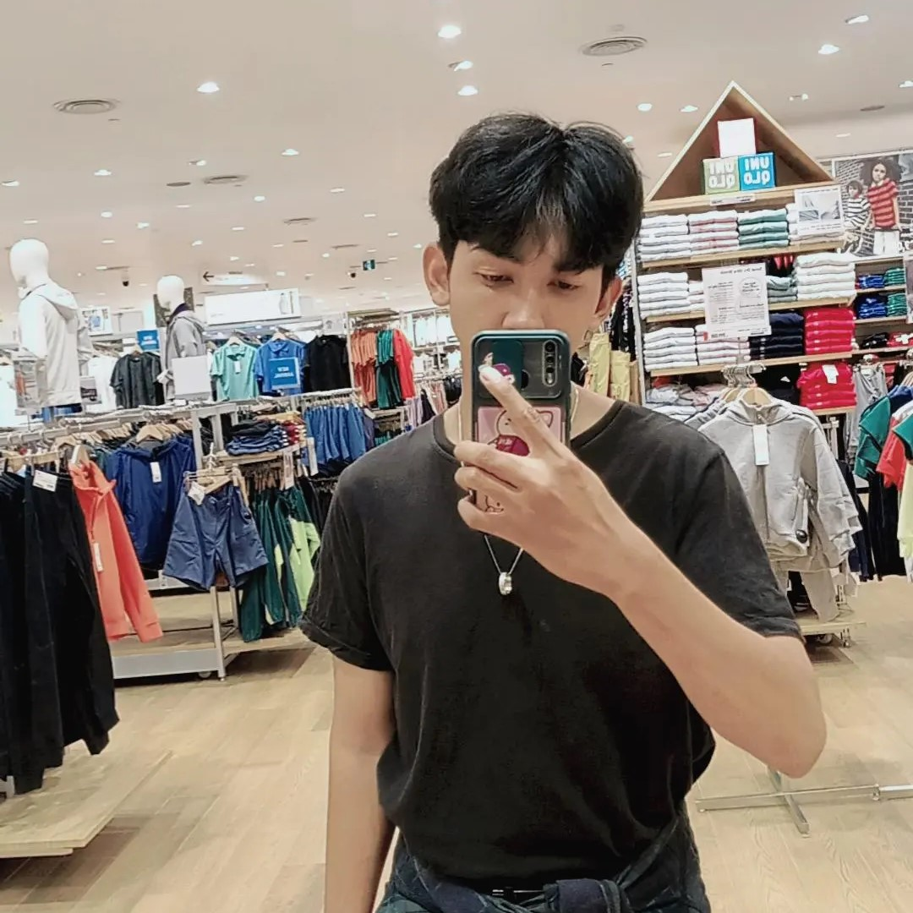

Muhammad Ghazy Aulia Ramadhan
Mahasiswa Teknik Informatika • Desain UI/UX & Web
Kampus B STT Terpadu Nurul FikriJl. Lenteng Agung Raya No. 20, Srengseng Sawah
Jagakarsa, Jakarta Selatan, DKI Jakarta 12640
- Email: mgar0810@gmail.com
- Telephone: +62 85810818375
- Status: Aktif - Semester 1
Saya adalah seorang mahasiswa program studi Teknik Informatika di STT Terpadu Nurul Fikri yang memiliki minat dan antusiasme tinggi pada bidang Desain UI/UX serta Frontend Web Development. Dalam setiap proses perancangan, saya senantiasa menerapkan metodologi User-Centered Design guna menghasilkan antarmuka digital yang tidak hanya menarik secara estetika, namun juga efisien, intuitif, dan memberikan kenyamanan optimal bagi pengguna.
Melalui kegiatan praktikum dan berbagai proyek mandiri, saya terbiasa menyusun struktur layout web semantik berbasis HTML5, merancang gaya responsif dengan modern CSS, serta memperhatikan hierarki visual dan aksesibilitas. Saya memiliki semangat belajar yang kuat, adaptif terhadap perkembangan teknologi web modern, serta siap berkontribusi secara kolaboratif dalam tim untuk menciptakan solusi digital yang bermanfaat.